|
STABIA
El nombre de la ciudad
Castellamare di Stabia, viene de una antigua fortaleza,
posiblemente edificada por los sorrentinos en el siglo IX cerca
del mar. “Castrum ad mare”. De origen itàlico, su existencia se
remonta a la mitad del siglo VII a.e.c., como atestiguan recientes
excavaciones. Participó en la guerra social contra Roma y fue
destruida totalmente por las legiones de Sila el 30 de abril del
89 a.e.c.
Se convirtió en un importante centro de residencia de las familias
patricias romanas, fue enterrada junto a Pompei y Ercolano durante
la violenta erupción del Vesubio del 79.
Las Termas
Elogiadas antiguamente por Plinio el Viejo.
El Antiquarium stabiano
Recoge el material sacado a la luz en las
excavaciones de la antigua Stabia. Lo forman once salas en las que
se conservan numerosos frescos, entre ellos “el mito de Edipo”, “Dioniso”,
“Hércules niño”, “Doncella que duerme” y otras numerosas pinturas
de carácter helenístico.
Subiendo la meseta de Varano, se encuentran los
restos de estas dos grandiosas villas gentilicias romanas de la
antigua Stabia, sacadas a la luz en las excavaciones de 1950.
Villa
del Pastor
La Villa fue
excavada por primera vez en 1754. La villa debe su nombre a la
pequeña estatua de un pastor descubierta durante la excavación del
siglo XVIII.
La villa tiene una superficie de unos 19.000 m2. Las excavaciones
más recientes datan del 1967, parcialmente al descubierto la villa
después de un breve examen, el edificio fue nuevamente enterrado.
Villa Arianna
Villa Arianna fue excavada
inicialmente entre 1757 y 1762. La villa debe su nombre a un
fresco que retrata 'Ariadna abandonada por Teseo' hallado en la
pared de fondo del triclinium. La Villa tiene un diseño poco
convencional, data de la época republicana tardía; reformada en
época de Nerón y época Flavia. Parte de la villa se halla
enterrada.
Ricamente decorada. Destaca la pintura de Flora. Las habitaciones
principales están orientadas a la costa.
|
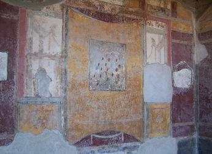
|
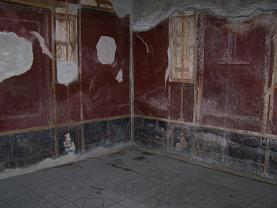 |
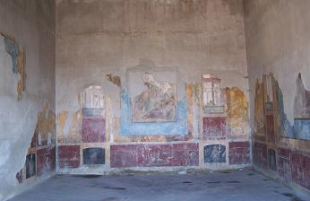 |
|
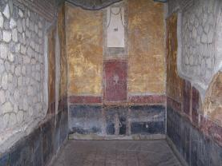 |
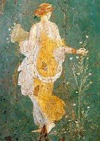 |
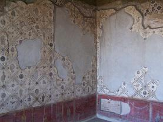 |
Villa San Marco
La Villa de San Marco debe su
nombre a una capilla construida en la segunda mitad del siglo XVIII.
El edificio original data de época de Augusto. La villa se amplió
considerablemente durante el período de Claudio. Tiene alrededor de
11.000 m2. En el peristilo, con jardín y piscina se hallan unos
pórticos laterales bellamente decorados. La villa posee un complejo
termal.
|
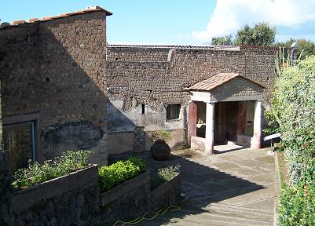 |
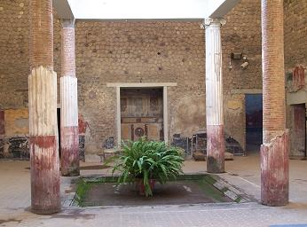 |
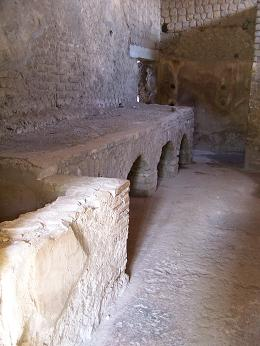 |
|
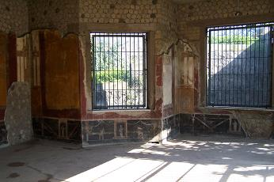 |
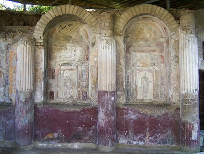
|
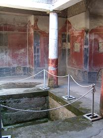 |
|
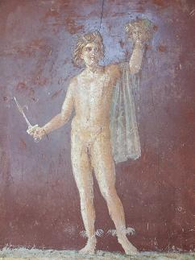 |
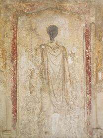 |
|